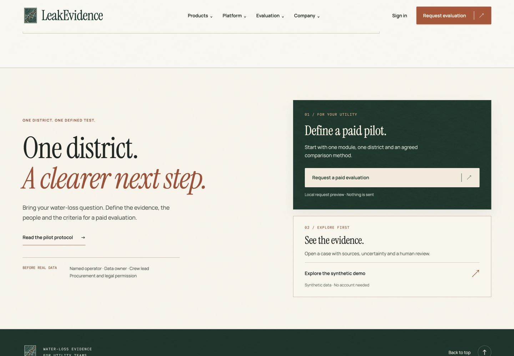
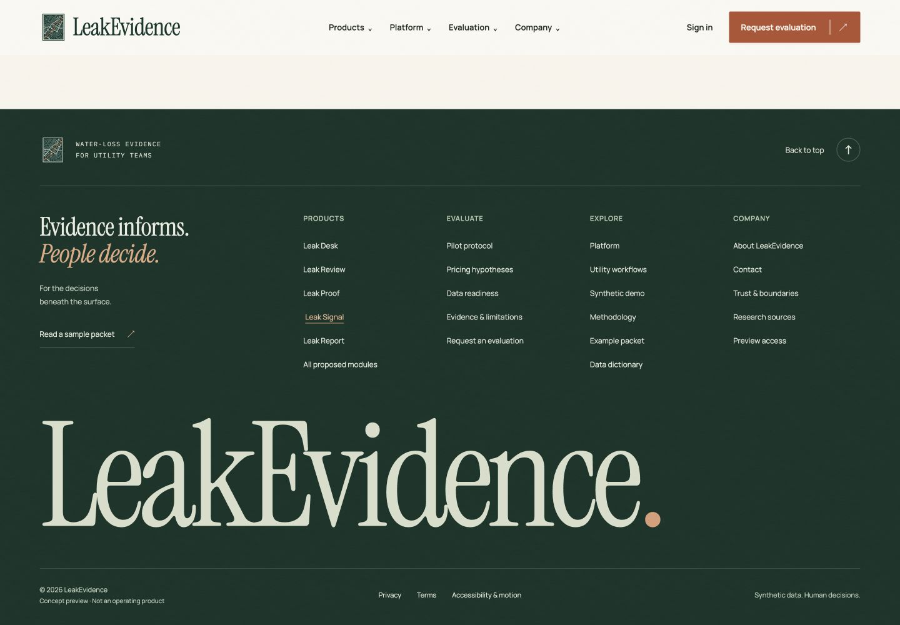

LEAKEVIDENCE / DESIGN RESEARCH / 25 OCTOBER 2026
A useful final decision.
A distinctive final impression.
Research through Perplexity’s high research preset, with direct browser inspection of Linear and Watershed. The implementation preserves LeakEvidence’s Evidence Atlas homepage and Instrument Room inner pages. This is design research, not evidence of conversion uplift.
Patterns compared
| Pattern and reference | Evidence | Decision for LeakEvidence |
|---|---|---|
| Restrained CTA + grouped directory Linear | Direct browser inspection: a closing proposition with Get started and Contact sales; five footer groups and separate legal links. | Use deliberate primary/secondary actions and predictable link groups. Keep the palette and typography specific to LeakEvidence. |
| Assisted vs self-directed evaluation Ramp demo options | Official page identified in research separates a live demo from an interactive product tour. | One path opens the evaluation request; the other opens the actual synthetic case. No second lead gate. |
| Usable demo destination Mercury demo | Research identified a functioning self-directed demo destination. | Make the secondary action an immediately usable experience. Label it synthetic and explain that no account is needed. |
| Distinct brand environment Watershed | Direct browser inspection of the regional homepage footer: dark navigation, prominent brand panel, grouped links, and separate legal utilities. | Use an evergreen material and editorial signature. Do not copy its blue panel, artwork or navigation scale. |
| Contrasting closing section Vanta | Research found a visually contrasting closing CTA in supplementary design captures. Not independently browser-verified in this task. | Considered as a hierarchy pattern only. No brand assets, badges or assurance claims reused. |
Usability guidance
NN/g’s footer guidance supports clear grouping, useful utility links, readable text and consistent locations. Its link-label guidance emphasizes wording that describes the immediate destination. LeakEvidence uses “Request” because the destination is a request form, not a booking calendar.
Implemented direction
- Closing invitation: “One district. A clearer next step.” Cream editorial copy beside an evergreen paid-evaluation panel and a secondary case-exploration panel.
- Primary CTA: Request a paid evaluation. Local-preview disclosure remains directly below it.
- Secondary CTA: Explore the synthetic demo. Opens DEMO-C01 with provenance and uncertainty.
- Context: Module-page CTAs preselect their module; general entry defaults to Not sure yet.
- Footer: Products, Evaluate, Explore and Company groups; separate legal/accessibility row; sample-packet link; functional Back to top.
- Brand: Large editorial wordmark on the homepage, smaller technical wordmark on inner pages. The oversized sign-off is an original composition choice, not a research-proven conversion technique.
- Interaction: Refined arrow compartments, hover, active and visible focus states; reduced-motion overrides. Mobile groups remain expanded.
Verification
Browser checked at 1440, 390 and 320 CSS pixels. No horizontal overflow in inspected homepage and product states. Tested evaluation navigation, module preselection, direct demo navigation and return-to-top. Static checker passes all 50 HTML files. Main footer text and CTA color-pair calculations range from 4.87:1 to 10.15:1; this is a scoped contrast check, not full accessibility certification. No errors or warnings were reported in the inspected browser session.
Rendered result

